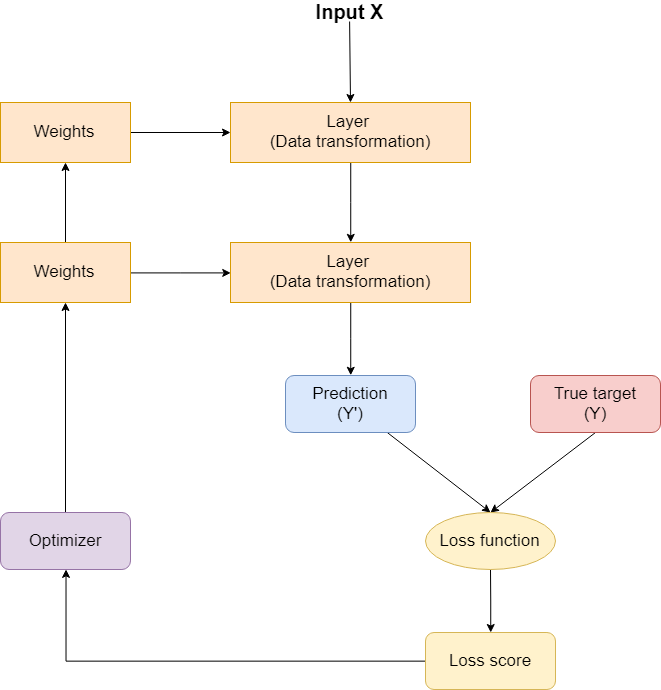
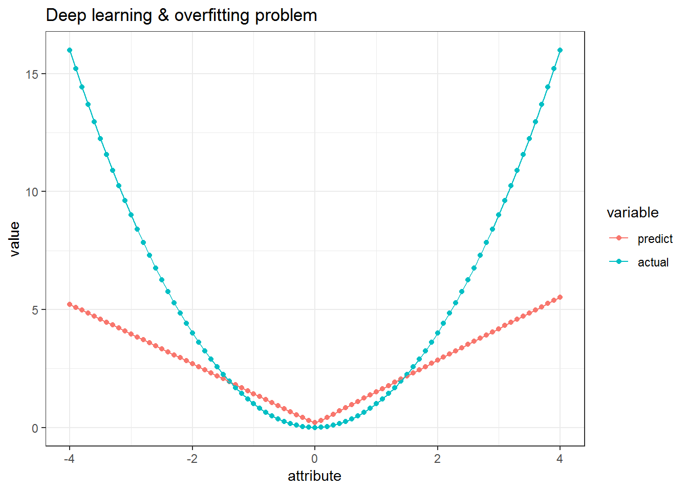
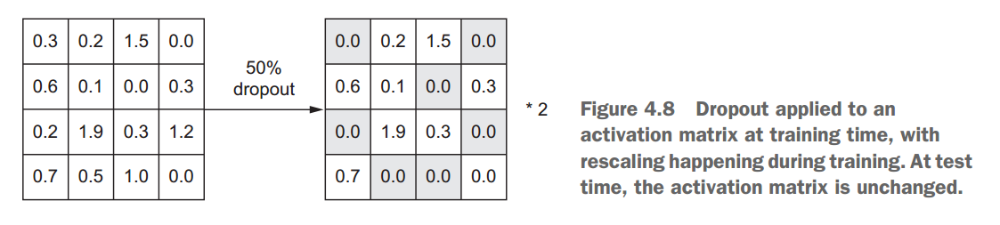

3. Mô hình deep learning cơ bản¶
3.1. Giới thiệu¶
Một mạng neurals network bao gồm 4 thành phần cơ bản:
Layers, các layers này được kết hợp lại trở thànhnetworkInput data&output target: Dữ liệu đầu vào và kết quả đầu raLoss function: Xác địnhfeedback signalđể mô hình tự điều chỉnhOptimizer: Thuật toán sử dụng để tối ưu hóa

3.1.1. Layers¶
Mỗi layers sẽ chứa nhiều neural và quy định về cấu trúc dữ liệu đầu
vào và hàm activation.
layer <- layer_dense(units = 32, input_shape = c(784), activation = "relu")
Ở ví dụ trên, layer trên yêu cầu dữ liệu có shape 784 và 32 neural.
Đối với keras, input của các layer sau được tự động điều chỉnh để
phù hợp với output từ layer trước đó.
Hàm kích hoạt (``activation function``)
Gọi {\(x_1\),…,\(x_n\)} là các biến đầu vào tại 1 node j, ta có hàm kích hoạt:
Trong đó, \(w_{ij}\) là trọng số của biến \(x_i\) tại neuron j, \(b_j\) còn được gọi là bias
Hàm kích hoạt trong neural network thường có giá trị trong khoảng
(0,1) hoặc (-1,1). Hàm kích hoạt có 1 số dạng thường gặp sau:
Sigmoid function: \(f(u)=\frac{1}{1+exp(-cu)}\)
Linear function: \(f(u)=u\)
Hyperbolic function:
\[f(u)=tanh(cu)=\frac{sinh(cu)}{cosh(cu)}= \frac{(e^{cu}-e^{-cu})/2}{(e^{cu}+e^{-cu})/2}=\frac{e^{2cu}-1}{e^{2cu}+1}\]Rectified linear unit (ReLU): $f(u) = max(0, u) $
Hàm này rất hay được sử dụng trong Deep Learning do tốc độ xử lý nhanh.
3.1.2. Loss functions & Optimizer¶
Loss function sẽ quy định về hàm tính toán sai số trong mô hình và
sẽ sử dụng kết quả này để thuật toán tối ưu (optimizer) tối ưu hóa
lại các weights
Lưu ý: Một mạng neural có thể có nhiều output, do đó có thể có cùng
lúc nhiều loss function cho từng output khác nhau. Tuy nhiên, để
thuật toán hoạt động được, các loss function này cần phải được convert
về một hàm duy nhất (scalar function)
Thuật toán backpropagation:
- Step 1: Tạo các trong số ngẫu nhiên cho các input
- Step 2: Tính toán các giá trị output trong network
- Step 3: Tính toán sai số
- Step 4: Tính toán đạo hàm riêng phần của sai số theo trọng số \(w_{ij}\): \(\frac{d \epsilon}{d w_{ij}}\)
- Step 5: Điều chỉnh lại trọng số của từng input trong neuron để tối thiểu hóa sai số
3.2. Keras¶
Keras là high level framework của deep learning, giúp việc xây
dựng kiến trúc mạng neural trở nên đơn giản và dễ dàng. Ở tầng thấp hơn,
keras tận dụng các low level framework khác của deep learning
như Tensor Flow, Theano để xây dựng mô hình.
library(keras)
library(tensorflow)
install_keras(method = "conda")
install_tensorflow(method = "conda")
Lưu ý: Cần phải cài đặt anaconda trước khi sử dụng keras
3.3. Các mô hình thường dùng¶
3.3.1. Mô hình multiclass¶
### Ví dụ mô hình deep learning
mnist <- dataset_mnist()
save(mnist, file = "data/mnist.rda")
library(dplyr)
library(keras)
#Bước 1: Load dữ liệu
load("data/mnist.rda")
train_images <- mnist$train$x
train_labels <- mnist$train$y
test_images <- mnist$test$x
test_labels <- mnist$test$y
#Bước 2: Tạo network 2 layer
network <- keras_model_sequential() %>%
layer_dense(units = 512, activation = "relu", input_shape = c(28 * 28)) %>%
layer_dense(units = 10, activation = "softmax")
#Bước 3: Tạo cơ chế optimize network
network %>% compile(
optimizer = "rmsprop",
loss = "categorical_crossentropy",
metrics = c("accuracy")
)
#Bước 4: Reshape lại dữ liệu về dạng tensor 2-2
train_images <- array_reshape(train_images, c(60000, 28 * 28))
train_images <- train_images / 255
test_images <- array_reshape(test_images, c(10000, 28 * 28))
test_images <- test_images / 255
train_labels <- to_categorical(train_labels)
test_labels <- to_categorical(test_labels)
#Bước 5: Train mô hình
history <- network %>% fit(train_images,
train_labels,
epochs = 5,
batch_size = 128)
#Bước 6: Đánh giá mô hình
metrics <- network %>% evaluate(test_images, test_labels)
metrics
## $loss
## [1] 0.06472096
##
## $acc
## [1] 0.98
3.3.2. Mô hình regression¶
library(dplyr)
library(keras)
boston_house <- keras::dataset_boston_housing()
save(boston_house, file = "data/boston_house.Rda")
load("data/boston_house.Rda")
train_data <- boston_house$train$x
train_targets <- boston_house$train$y
test_data <- boston_house$test$x
test_targets <- boston_house$test$y
# Feature Engineering
mean <- apply(train_data, 2, mean)
std <- apply(train_data, 2, sd)
train_data <- scale(train_data, center = mean, scale = std)
test_data <- scale(test_data, center = mean, scale = std)
model <- keras_model_sequential() %>%
layer_dense(
units = 64,
activation = "relu",
input_shape = dim(train_data)[[2]]
) %>%
layer_dense(units = 64, activation = "relu") %>%
layer_dense(units = 1)
model %>% compile(optimizer = "rmsprop",
loss = "mse",
metrics = c("mae"))
history <- model %>% fit(train_data,
train_targets,
epochs = 10,
batch_size = 128)
model %>% evaluate(test_data, test_targets)
## $loss
## [1] 313.8693
##
## $mean_absolute_error
## [1] 15.69079
3.4. Các lưu ý khi xây dựng mô hình¶
3.4.1. Feature Engineering¶
- Mô hình deep learning hoạt động tốt với scale nhỏ - trong khoảng 0-1
- Dữ liệu cần thể hiện dưới dạng số
- Dữ liệu đầu vào cần có cùng khoảng
- Dữ liệu train và test không khác biệt nhau quá nhiều
- Missing value có thể chuyển về giá trị 0
3.4.2. Overfiting¶
3.4.2.1. Giới hạn deep-learning¶
Mô hình deep-learning sẽ gặp giới hạn khi làm việc với dữ liệu hoàn toàn
mới (new data space). Khi đó, mô hình sẽ có xu hướng dự báo biến
target trong vùng target của tập train
library(dplyr)
library(ggplot2)
rm(list=ls())
set.seed(2016)
data <- data.frame(attribute = seq(-2,2, by=0.01)) %>%
mutate(response = attribute^2)
data %>% head
## attribute response
## 1 -2.00 4.0000
## 2 -1.99 3.9601
## 3 -1.98 3.9204
## 4 -1.97 3.8809
## 5 -1.96 3.8416
## 6 -1.95 3.8025
# Build mô hình keras
model <- keras_model_sequential() %>%
layer_dense(units = 128,
activation = "relu",
input_shape = 1) %>%
layer_dense(units = 128,
activation = "relu",
input_shape = 1) %>%
layer_dense(units = 128,
activation = "relu",
input_shape = 1) %>%
layer_dense(units = 1)
model %>%
compile(optimizer = "rmsprop",
loss = "mse",
metrics = "mae")
model %>%
fit(data$attribute,
data$response,
batch_size = 128,
epochs = 3)
model %>% summary
## ___________________________________________________________________________
## Layer (type) Output Shape Param #
## ===========================================================================
## dense_6 (Dense) (None, 128) 256
## ___________________________________________________________________________
## dense_7 (Dense) (None, 128) 16512
## ___________________________________________________________________________
## dense_8 (Dense) (None, 128) 16512
## ___________________________________________________________________________
## dense_9 (Dense) (None, 1) 129
## ===========================================================================
## Total params: 33,409
## Trainable params: 33,409
## Non-trainable params: 0
## ___________________________________________________________________________
#Test dữ liệu
test_data <- data_frame(attribute = seq(-4,4,by = 0.1))
predict <- predict(model, test_data$attribute)
result <- data_frame(predict = predict[,1],
actual = test_data$attribute^2,
attribute = test_data$attribute)
result %>% head
## # A tibble: 6 x 3
## predict actual attribute
## <dbl> <dbl> <dbl>
## 1 5.22 16 -4
## 2 5.10 15.2 -3.9
## 3 4.97 14.4 -3.8
## 4 4.84 13.7 -3.7
## 5 4.72 13.0 -3.6
## 6 4.59 12.2 -3.5
result %>%
reshape2::melt(id.vars = "attribute") %>%
ggplot(aes(attribute, value)) +
geom_point(aes(col = variable)) +
geom_line(aes(col = variable)) +
theme_bw() -> p
p + labs(title = "Deep learning & overfitting problem")

3.4.2.2. Độ lớn của mạng neural¶
Để xác định cấu trúc mô hình khi nào sẽ bắt đầu bị overfit, ta cần
tăng kích thước cho mạng neural ở 3 khía cạnh sau
- Số lượng layer
- Số lượng node trong 1 layer
- Số lượng epochs
3.4.2.3. Regularization¶
- Occam’s razor: Khi đưa ra 2 lời giải thích cho 1 vấn đề, lời giải thích đơn giản hơn thường sẽ là lời giải thích chính xác hơn.
Regularization - thêm trọng số cho các parameters
- L1: Absolute value of weights
- L2: Square of the value of the weights
model <- keras_model_sequential() %>%
layer_dense(units = 16, kernel_regularizer = regularizer_l1(0.001),
activation = "relu", input_shape = c(10000)) %>%
layer_dense(units = 16, kernel_regularizer = regularizer_l2(0.001),
activation = "relu") %>%
layer_dense(units = 1, activation = "sigmoid")
Lưu ý:
- regularizer_l2(0.001) nghĩa là với mỗi giá trị trong ma trận trọng số sẽ thêm 0.001 * weight_coefficient (\(weight^2\))vào tổng giá trị loss của network
- Nếu muốn thêm cả L1 và L2
regularizer_l1_l2(l1 = 0.001, l2 = 0.001)
3.4.2.4. Dropout¶
Dropout là kỹ thuật loại bỏ ngẫu nhiên các output (đặt bằng 0) trong quá
trình training. Ví dụ vector output là [0.2, 0.5, 0.1, 0.7], sau khi
dropout với tỷ lệ 0.5 sẽ là [0, 0.5, 0, 0.7]

model <- keras_model_sequential() %>%
layer_dense(units = 16, activation = "relu", input_shape = c(10000)) %>%
layer_dropout(rate = 0.5) %>%
layer_dense(units = 16, activation = "relu") %>%
layer_dropout(rate = 0.5) %>%
layer_dense(units = 1, activation = "sigmoid")
3.4.3. Kiến trúc layer trong các bài toán khác nhau¶
- Khi xây dựng các loại mô hình, cần lưu ý layer cuối như sau:
| Problem type | Last-layer activation | Loss function |
|---|---|---|
| Binary classification | sigmoid |
binary_crossentrop
y |
| Multiclass, single-label classification | softmax |
categorical_crosse
ntropy |
| Multiclass, multilabel classification | sigmoid |
binary_crossentrop
y |
| Regression to arbitrary values | None | mse |
| Regression to values between 0 and 1 | sigmoid |
mse or
binary_crossentrop
y |